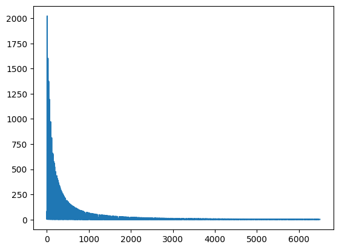
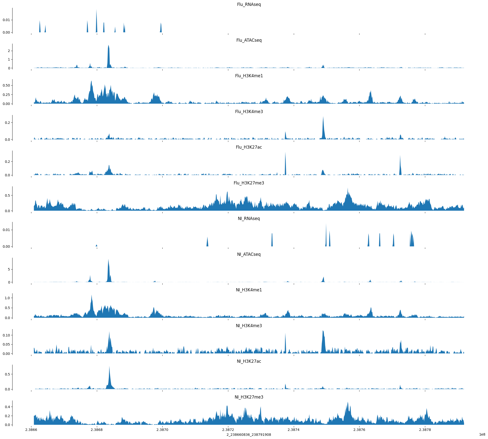

Code
import h5py
import numpy as np
import torch
import os,sys
import kipoiseq
sys.path.append("./../2023-09-05-ref_to_aracena_mlp")
import ref_to_aracena_modelsSaideep Gona
September 8, 2023
model_type = "cnn"
cur_individual = "AF20"
device = (
"cuda"
if torch.cuda.is_available()
else "mps"
if torch.backends.mps.is_available()
else "cpu"
)
print(device)
if model_type == "linear":
cur_model = ref_to_aracena_models.RefToAracenaMLP(hidden_layer_dims=[])
else:
cur_model = ref_to_aracena_models.RefToAracenaCNN()
cur_model = cur_model.to(device)cpusaved_models_path = "/beagle3/haky/users/saideep/projects/aracena_modeling/saved_models"
trained_model_path = os.path.join(saved_models_path, "train18_ref_to_aracena_cnn_poissonlog_ep99_lr1e-06.pt")
# trained_model_path = os.path.join(saved_models_path, "train1_ref_to_aracena_cnn_poissonlog_ep19_lr1e-06.pt")
saved_model = torch.load(trained_model_path, map_location=device)
cur_model.load_state_dict(saved_model["model_state_dict"])
cur_model.eval()RuntimeError: Error(s) in loading state_dict for RefToAracenaCNN:
Missing key(s) in state_dict: "model.0.0.weight", "model.0.0.bias", "model.0.0.running_mean", "model.0.0.running_var", "model.0.2.weight", "model.0.2.bias", "model.1.0.weight", "model.1.0.bias".
Unexpected key(s) in state_dict: "model.0.weight", "model.0.bias". <Axes: >
Load in some validation datasets for evaluation
validation_path = "/beagle3/haky/users/saideep/projects/aracena_modeling/hdf5_training/AF20_valid_aracena.h5"
sequence_ind = 40
track_ind = 1
with h5py.File(validation_path, "r") as f:
example_valid = f['targets'][:,:,sequence_ind]
example_valid_reg = f['regions'][:,:,sequence_ind]
example_valid.shape
bigwig_track_readouts = [
"RNAseq",
"ATACseq",
"H3K4me1",
"H3K4me3",
"H3K27ac",
"H3K27me3"
]
conditions = ["Flu","NI"]
bigwig_tracks = []
for condition in conditions:
for bigwig_track_readout in bigwig_track_readouts:
bigwig_tracks.append(condition+"_"+bigwig_track_readout)
import matplotlib.pyplot as plt
import seaborn as sns
def plot_tracks(tracks, interval, height=1.5):
fig, axes = plt.subplots(len(tracks), 1, figsize=(20, height * len(tracks)), sharex=True)
for ax, (title, y) in zip(axes, tracks.items()):
ax.fill_between(np.linspace(interval[1], interval[2], num=len(y)), y)
ax.set_title(title)
sns.despine(top=True, right=True, bottom=True)
ax.set_xlabel("_".join([str(x) for x in interval]))
plt.tight_layout()
We can now make a prediction on the corresponding input region using our stored model(s)
target_interval_str = "_".join([str(x) for x in target_interval])
print(target_interval_str)
ref_index = mapping_table.loc["ref-epigenome", target_interval_str]
print(ref_index)
print(target_interval_str in mapping_table.columns)
with h5py.File("/beagle3/haky/users/saideep/projects/aracena_modeling/hdf5_training/ref-epigenome_valid_aracena.h5", "r") as f:
example_ref_pred = f['ref_epigenome'][:,:,int(ref_index)]
example_ref_region = f['regions'][:,:,int(ref_index)]
example_ref_region_str = "_".join([str(x) for x in example_ref_region[0,:]])
print(example_ref_region_str)
print(target_interval_str)
print(example_ref_pred.shape)2_238660836_238791908
33
True
2_238660836_238791908
2_238660836_238791908
(896, 5313)def create_tracks(aracena, predictions, track_names):
tracks = {}
for i,track_name in enumerate(track_names):
for track_type in ['aracena', 'model_prediction']:
if track_type == 'aracena':
tracks[track_name+"_"+track_type] = aracena[:,i]
elif track_type == 'model_prediction':
tracks[track_name+"_"+track_type] = predictions[i,:]
return tracks
cur_model = cur_model.to(device)
input_tensor = torch.from_numpy(example_ref_pred).to(device).unsqueeze(0).to(device)
print(input_tensor.shape)
if model_type == "linear":
pass
elif model_type == "cnn":
input_tensore = input_tensor.swapaxes(1,2)
ex_out_raw = cur_model(input_tensor)
ex_out = ex_out_raw.squeeze().cpu().detach().numpy()[:,:]
print(ex_out.shape)
print(np.sum(ex_out, axis=0))
tracks = create_tracks(example_valid, ex_out.swapaxes(0,1), bigwig_tracks)torch.Size([1, 896, 5313])
(896, 12)
[ 15.339787 42.597248 60.79495 19.235102 78.37865 903.8718
98.23487 33.36463 17.024366 30.499329 14.915353 74.11469 ]OK, for this example things are not so promising. It seems like the model was converging on the training set at least, maybe some of those predictions will show promise.
model_type = "cnn"
if model_type == "linear":
cur_model = ref_to_aracena_models.RefToAracenaMLP(hidden_layer_dims=[])
else:
cur_model = ref_to_aracena_models.RefToAracenaCNN()
cur_model = cur_model.to(device)
group = "train18"
train_path = f"/beagle3/haky/users/saideep/projects/aracena_modeling/hdf5_training/AF20_{group}_aracena.h5"
saved_models_path = "/beagle3/haky/users/saideep/projects/aracena_modeling/saved_models"
trained_model_path = os.path.join(saved_models_path, "train18_ref_to_aracena_cnn_poissonlog_ep99_lr1e-06.pt")
# trained_model_path = os.path.join(saved_models_path, "train1_ref_to_aracena_cnn_poissonlog_ep19_lr1e-06.pt")
saved_model = torch.load(trained_model_path, map_location=device)
cur_model.load_state_dict(saved_model["model_state_dict"])
cur_model.eval()
sequence_ind = 0
with h5py.File(train_path, "r") as f:
example_train = f['targets'][:,:,sequence_ind]
example_train_reg = f['regions'][:,:,sequence_ind]
target_interval = [str(example_train_reg[0,0]), example_train_reg[0,1], example_train_reg[0,2]]
target_interval_str = "_".join([str(x) for x in target_interval])
print(target_interval_str)
ref_index = mapping_table.loc["ref-epigenome", target_interval_str]
print(ref_index)
with h5py.File(f"/beagle3/haky/users/saideep/projects/aracena_modeling/hdf5_training/ref-epigenome_{group}_aracena.h5", "r") as f:
example_ref_pred = f['ref_epigenome'][:,:,int(ref_index)]
example_ref_region = f['regions'][:,:,int(ref_index)]
print(example_train_reg, example_ref_region)
ex_out_raw = cur_model(torch.from_numpy(example_ref_pred).to(device).unsqueeze(0).to(device))
ex_out = ex_out_raw.squeeze().cpu().detach().numpy()[:,:].swapaxes(0,1)
tracks = create_tracks(example_train, ex_out, bigwig_tracks)
tracks["CAGE_ref"] = example_ref_pred[:,4766]cpuRuntimeError: Error(s) in loading state_dict for RefToAracenaCNN:
Missing key(s) in state_dict: "model.0.0.weight", "model.0.0.bias", "model.0.0.running_mean", "model.0.0.running_var", "model.0.2.weight", "model.0.2.bias", "model.1.0.weight", "model.1.0.bias".
Unexpected key(s) in state_dict: "model.0.weight", "model.0.bias".